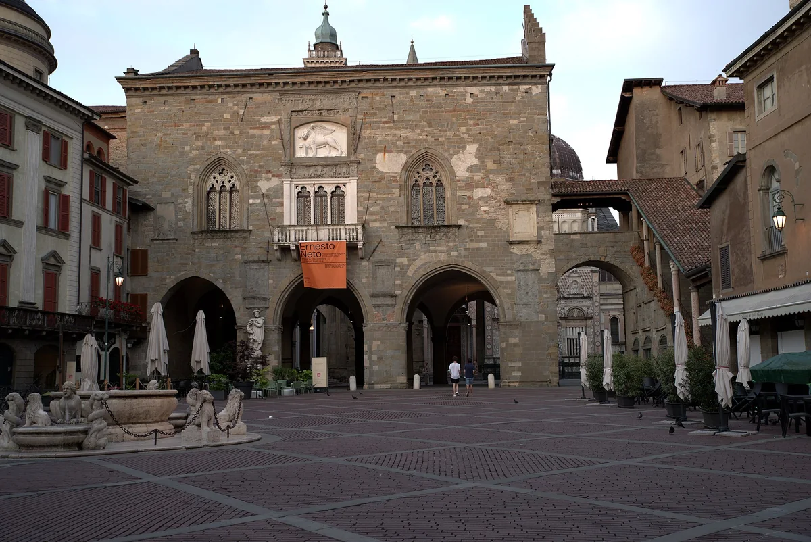
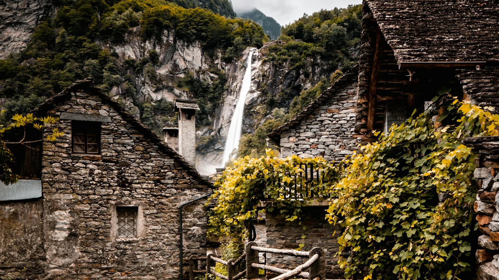
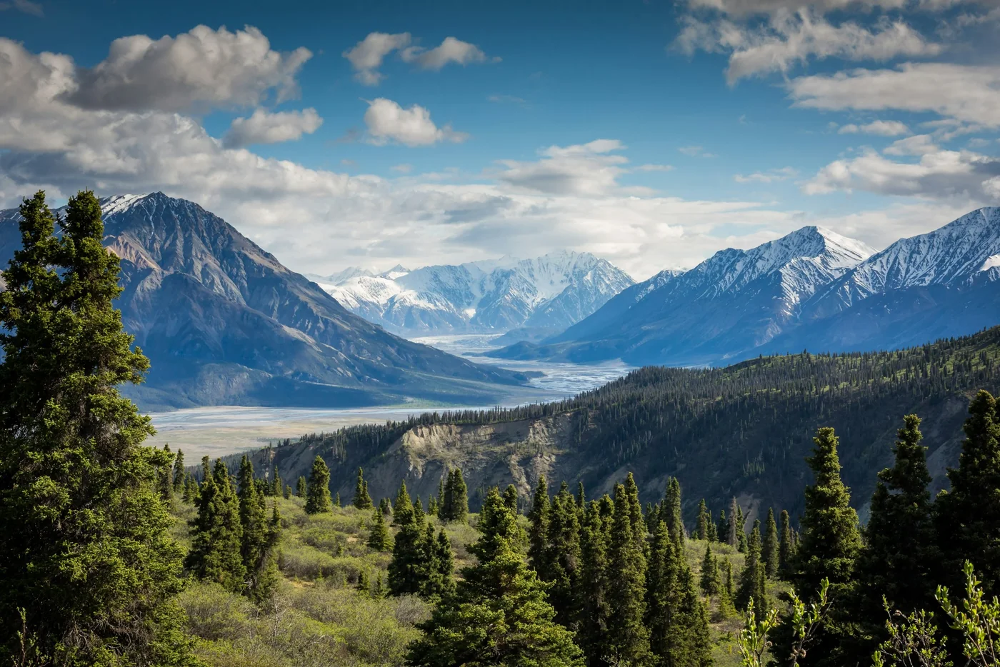

Day 01 · Arrival
Milan to Bergamo Città Alta
Settle into the Upper City for Venetian walls, evening light and dinner above the plain at Il Pianone.
Stay · Fuori Porta House
See the detailed plan
Ticino and Lombardy · 25–30 September 2026
A considered route from Milan to Bergamo, through Val Bavona and Val Calnègia, then onward to Ascona and Val Verzasca.
Journey
Move from a walled city to quiet stone valleys, a lakeside pause and the clear water of Verzasca.

Day 01 · Arrival
Settle into the Upper City for Venetian walls, evening light and dinner above the plain at Il Pianone.
Stay · Fuori Porta House
See the detailed planDay plans
Each plan includes timing, stays, meals and alternatives. The complete guide keeps the practical detail together.
Città Alta · Urban opening
A measured first day among the Venetian walls, funicular lanes and evening views over the plain.

“Stone villages, falling water and paths that become quieter with every turn.”
Before you go
Conditions in the valleys can change. Check these close to departure and choose the lower route whenever the high option is uncertain.
Review the mountain forecast and use the prepared lower-valley alternatives in poor conditions.
See weather alternatives 02Confirm current roads, buses, parking and the final connection into Val Bavona.
Review transport notes 03Check accommodation, restaurants and valley services directly before relying on them.
View stays and dining 04The proposed bivouac is conditional. Obtain written approval and confirm access before considering it.
Read the Cròsa conditionsGuide
Use the interactive guide for browsing and links, or open the printable edition for offline reference.
Day-by-day plans, stays, meals, maps, alternatives and direct booking links.
PrintableA single document for reading, saving or printing before the journey.
Previous guides remain available for reference.